doodlin'
keep on and never stop doodlin'

minimalist graphical editor
Horizontal lines, vertical lines, quarter circles, and that’s it
keep on and never stop doodlin'
 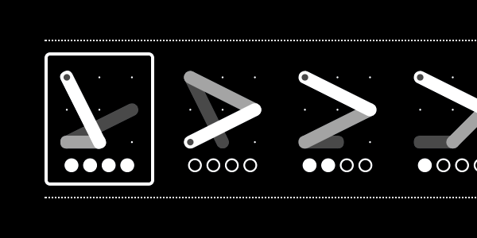
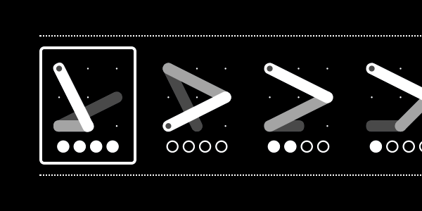
 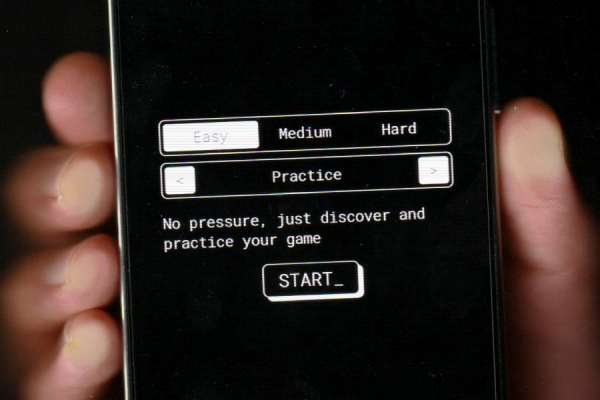
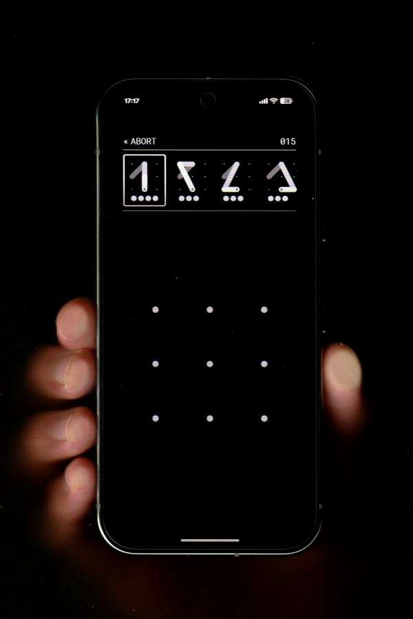
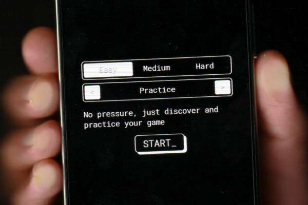
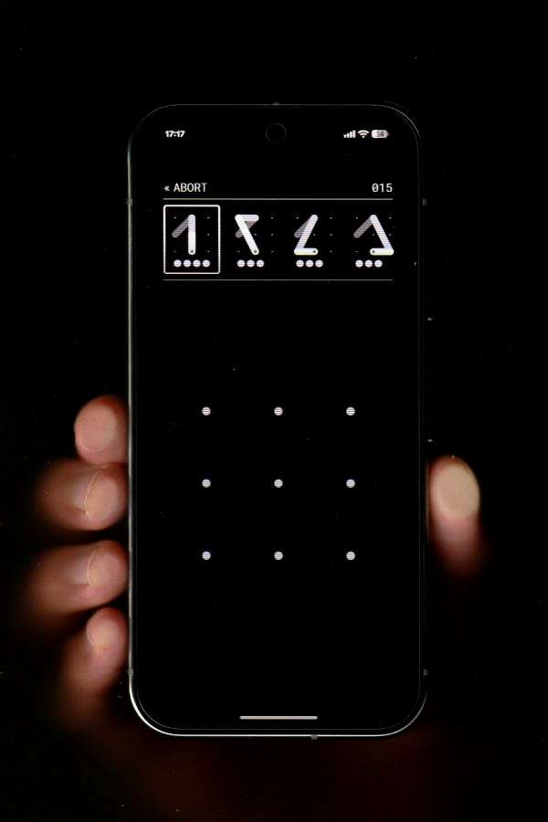
SVG animation library
this tiny project became wildly popular and grew out of proportion
Tetris on a Novation Launchpad via WebMIDI
stop-motion video explaining the WebRTC protocol
Cheap reproduction of the second Justice world tour live show
Isometric graphic editor
It's like pixel art but with triangles. These are creations made with it.
 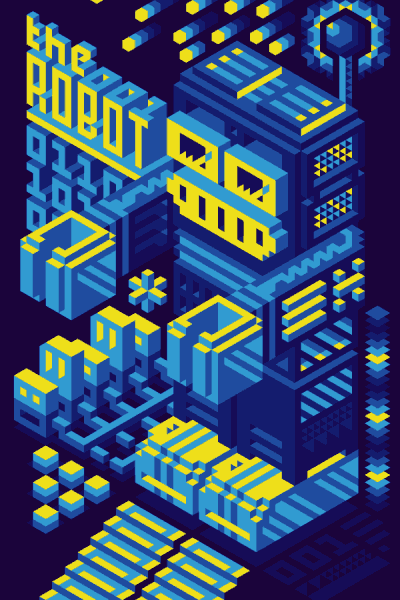
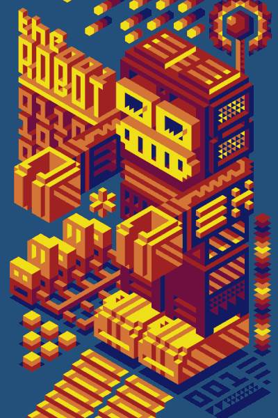
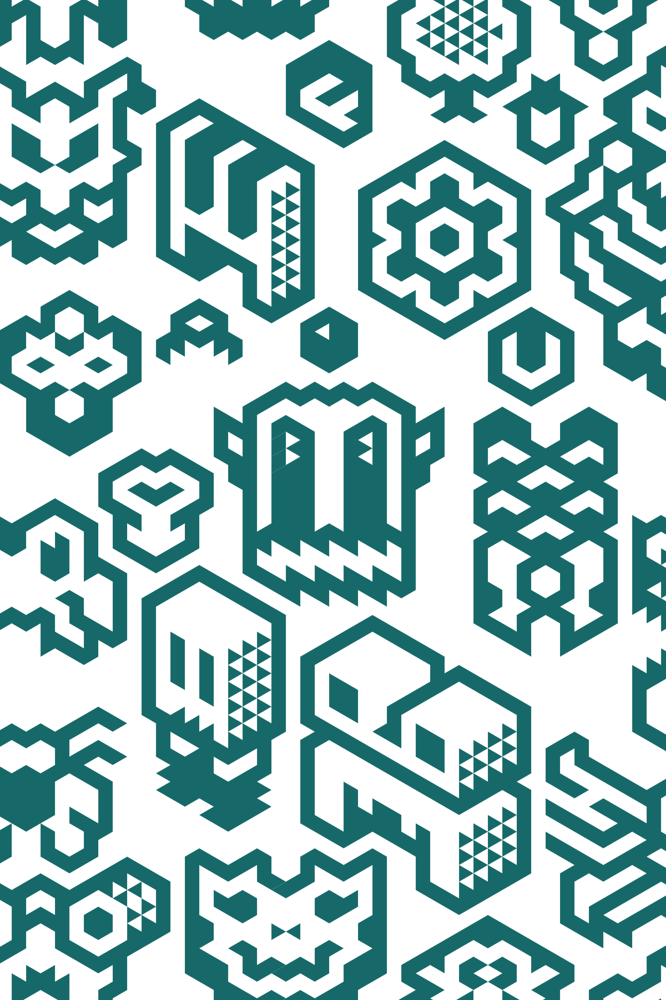
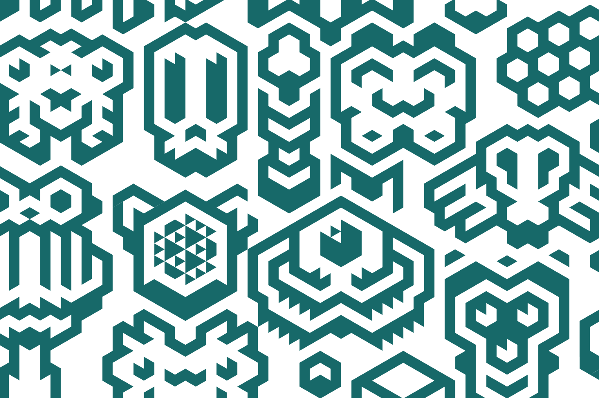
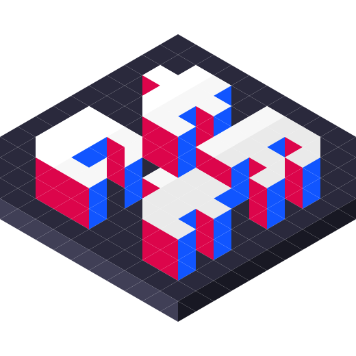
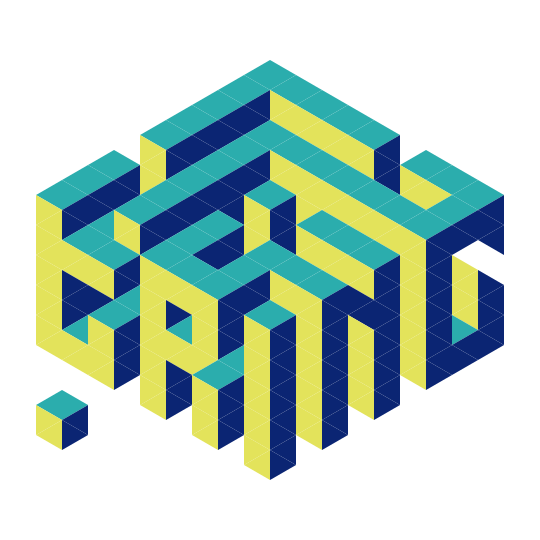
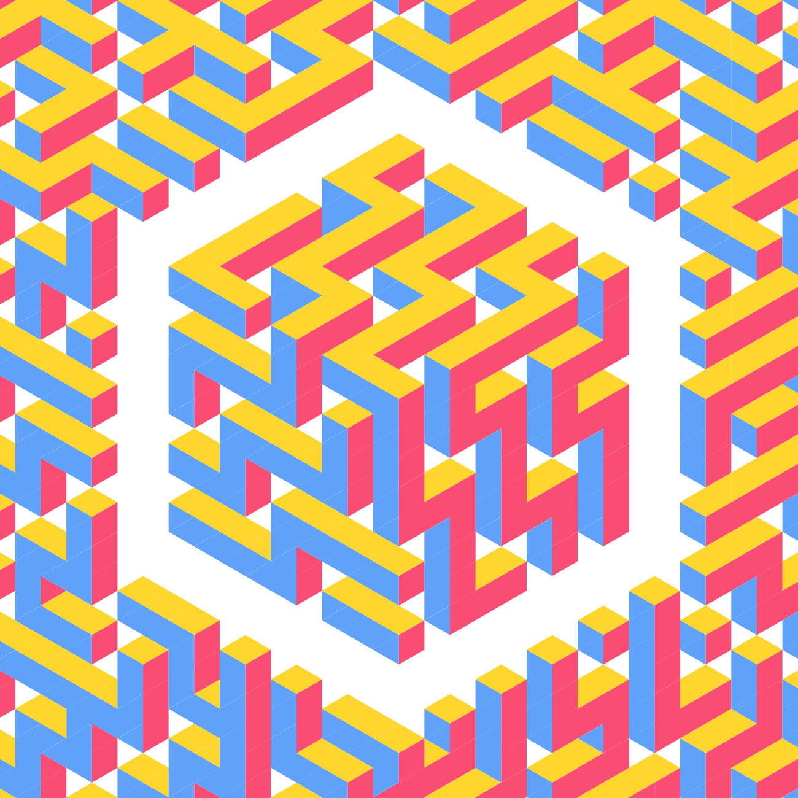
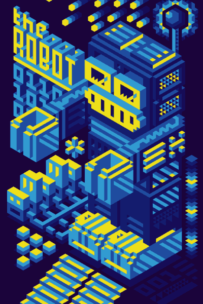
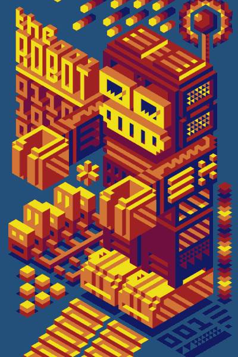
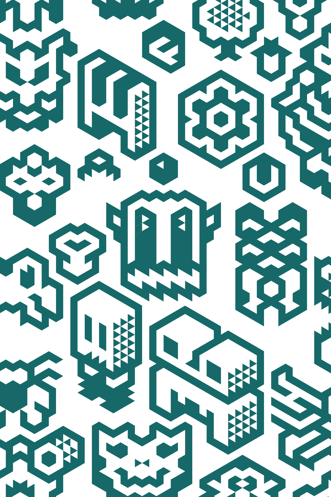
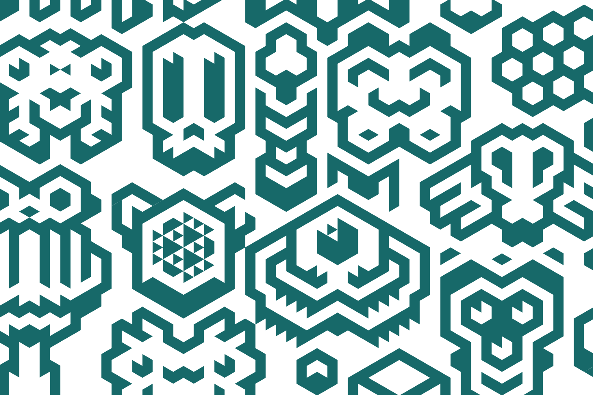
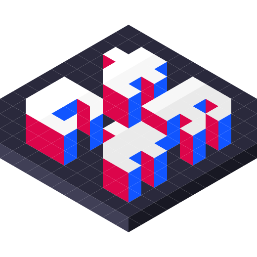
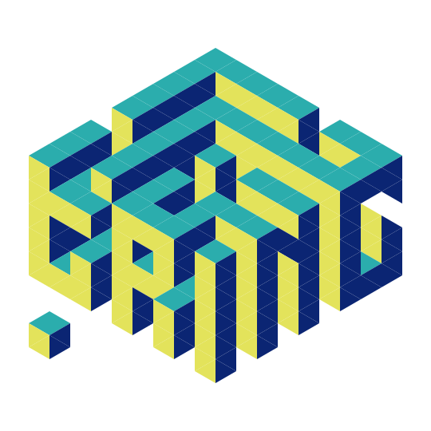
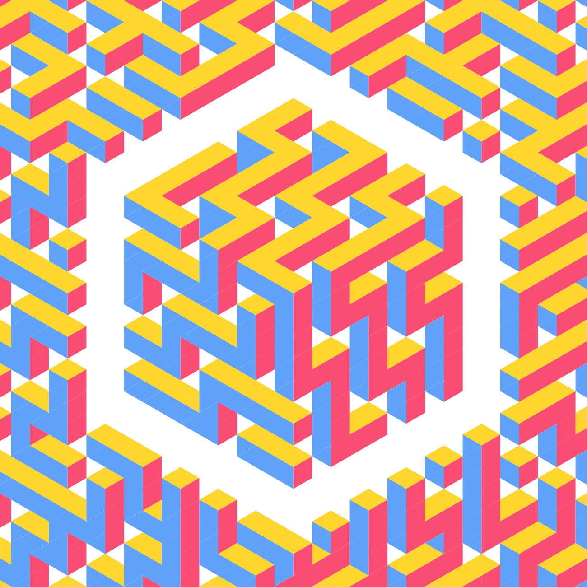
 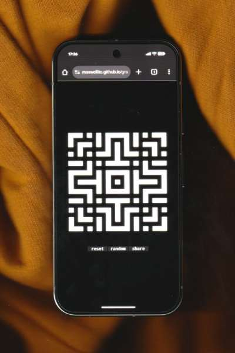
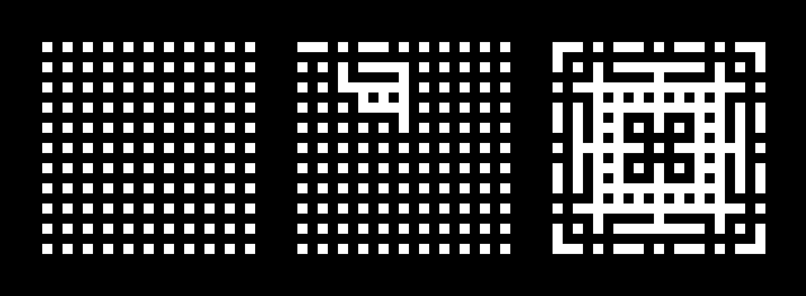
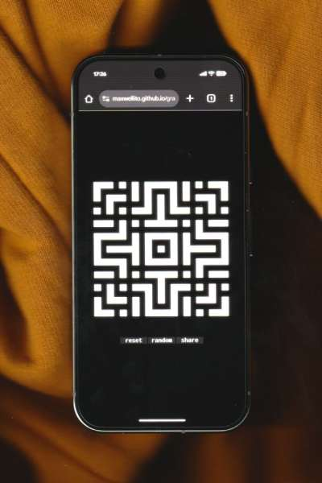
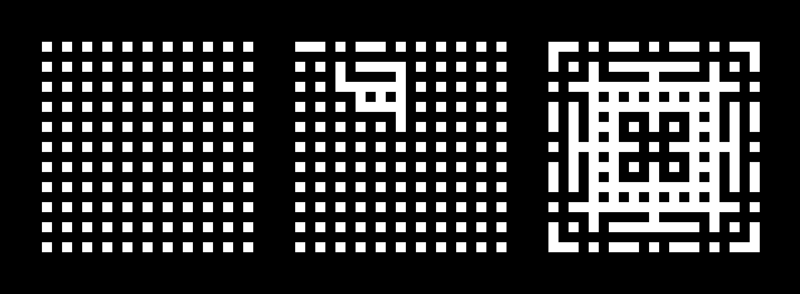